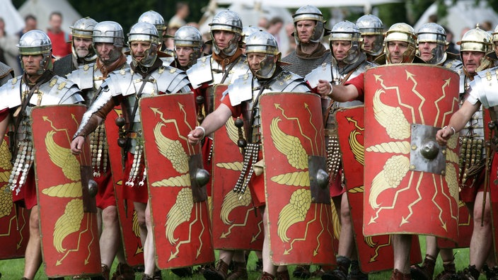

Die alten Römer hatten eine sehr effektive Kriegsmaschinerie. Sie bestand mehrheitlich aus den Fußsoldaten, welche große Schilde trugen und ein Schwert führten. Dazu gehörten auch Kampfeinheiten zu Pferd, welche man Kavallerie nannte. Die römische Armee teilte man in Legionen ein. Eine Legion bestand aus ca. 5500 Mann. Diese bestand ausschließlich aus Römern. Zu einer Legion gab es meistens auch ungefähr gleich viele Hilfstruppen, welche aus Söldnern der eroberten Gebiete oder verbündeten bestand. Eine Legion konnte man in verschiedene Kohorten einteilen. So eine Kohorte umfasste 800 Soldaten. Diese 800 Mann wurden dann auf je 5 Zenturien gleichmäßig verteilt. Ein Zenturio ist der General einer solchen 160 Mann starken Einheit. Das Militär war sehr schlagkräftig auf offenem Gelände, jedoch sehr schwach wenn sie in einen Hinterhalt gerieten.
Es gibt noch viel mehr über das Milirär der alten Römer zu erfahren. Wenn du interessiert bist, dann klicke auf den Link unten.